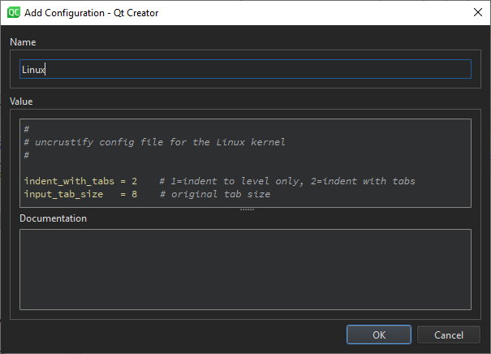

Beautifying Source Code
You can use the experimental Beautifier plugin to format your source code by using the following external tools:
The Beautifier plugin parses the source code into component structures, such as assignment statements, if blocks, loops, and so on, and formats them as specified in the Beautifier options. You can use a predefined style or define your own style.
To use the Beautifier plugin:
- Download and install the tool to use for formatting source code:
You might have to build the tools from sources for some platforms.
- Select Help > About Plugins > C++ > Beautifier to enable the plugin.
- Restart Qt Creator to be able to use the plugin.
- Select Tools > Options > Beautifier to specify settings for beautifying files.
- Select the Enable auto format on file save check box to automatically beautify files when you save them using the tool you select in the Tool field.

- In the Restrict to MIME types field, define the MIME types of the files to beautify, separated by semicolons. Leave the field empty to apply the tool on all files.
This setting is applied only when automatically beautifying files on save. To restrict the MIME types when selecting the menu item to format the currently open file, specify this option in the tool-specific tab.
- Select the Restrict to files contained in the current project check box to only beautify files that belong to the current project.
- Select Artistic Style, Clang Format, or Uncrustify to specify settings for the tool you want to use.

- In the Configuration group, specify the path to the tool executable in the Artistic Style command, Clang Format command, or Uncrustify command field.
- In the Restrict to MIME types field, define the MIME types of the files to beautify. This setting is applied when you select the menu item to format the currently open file.
- In the Options group, select the configuration file that defines the style to use in the source files. If you select several options, they are applied from top down. The available options depend on the tool.
- Select the Use file defined in project files option to use the configuration file defined in the qmake DISTFILES variable as the configuration file for the selected tool. This option is available for Artistic Style and Uncrustify.
- Select the Use specific config file option to use the specified file as the configuration file for the selected tool. This option is available for Artistic Style and Uncrustify.
- Select the Use file in $HOME option to use the specified file in the user's home directory as the configuration file for the selected tool. This option is available for Artistic Style and Uncrustify.
- For Clang Format, you can use a predefined style, by selecting the Use predefined style radio button, and then selecting the style to use from the list of available styles.
Select File to load the style configuration from the
.clang-formator_clang-formatfile located in the same directory as the source file or in one of its parent directories.To specify a fallback style to use if the style configuration file is not available, use the Fallback style combo box. Select Default to use the default style. Select None to skip formatting.
- Select the Use customized style option, and then Add to define your own style.
Define code formatting in the Add Configuration dialog. It provides syntax highlighting, auto-completion, and context-sensitive help. For these features, you must have the tool installed.

- Select Tools > Options > Beautifier > Artistic Style, ClangFormat, or Uncrustify > Format Current File to format the currently open file.
You can create keyboard shortcuts for the functions.
In addition to the Format Current File command, ClangFormat and Uncrustify provide additional commands. ClangFormat provides the Format at Cursor command. If you select it when no text is selected, the syntactic entity under the cursor is formatted. The Disable Formatting for Selected Text command wraps selected lines within // clang-format off and // clang-format on. Uncrustify provides the Format Selected Text command. If you select it when no text is selected, the whole file is formatted by default. To disable this behavior, deselect the Format entire file if no text was selected check box.